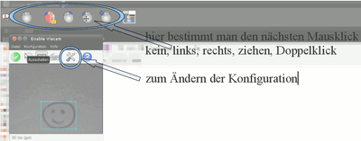

eViacam
Dieser Artikel wurde für die folgenden Ubuntu-Versionen getestet:
Ubuntu 14.04 Trusty Tahr
Zum Verständnis dieses Artikels sind folgende Seiten hilfreich:
Das Programm eViacam ist vornehmlich für Personen gedacht, die auf Grund einer körperlichen Behinderung den PC nicht mit einer Computermaus bedienen können. Mit eViacam ist man in der Lage, durch eine Kopfbewegung den Mauscursor zu steuern und wichtige Mausklicks (links, rechts, Doppelklick, gedrückt linke Maustaste) auszuführen. Die leichte Konfigurierbarkeit und ein Großteil des Leistungsumfangs lässt sich dem unten stehenden Video entnehmen.
Installation¶
Methode 1 - Deb-Paket¶
Beim SourceForge-Projekt eviacam werden DEB-Pakete angeboten. Die unterstützten Ubuntuversionen und Architekturen werden aufgelistet. Nachdem man sie für die korrekte Ubuntuversion und Architektur geladen hat, müssen DEB-Pakete noch installiert werden.
Hinweis!
Fremdpakete können das System gefährden.
Methode 2 - eViacam-PPA¶
Adresszeile zum Hinzufügen des PPAs:
ppa:cesar-crea-si/eviacam
Hinweis!
Zusätzliche Fremdquellen können das System gefährden.
Ein PPA unterstützt nicht zwangsläufig alle Ubuntu-Versionen. Weitere Informationen sind der  PPA-Beschreibung des Eigentümers/Teams cesar-crea-si zu entnehmen.
PPA-Beschreibung des Eigentümers/Teams cesar-crea-si zu entnehmen.
Damit Pakete aus dem PPA genutzt werden können, müssen die Paketquellen neu eingelesen werden.
eviacam (ppa)
 mit apturl
mit apturl
Paketliste zum Kopieren:
sudo apt-get install eviacam
sudo aptitude install eviacam
Über "Anwendungen -> Barrierefreiheit -> Enable Viacam" kann man das Programm starten.
Kompilieren¶
Möchte man die aktuellste Version, kann man von derselben Internetseite auch den Quellcode als gepacktes Archiv tar.gz herunterladen, entpacken [4] und kompilieren [5].
Zwecks Kompilierung sind zusätzlich folgende Pakete erforderlich:
libXext-dev
libXtst-dev
libgtk2.0-dev
libwxgtk2.8-dev (Version anpassen)
libcv-dev
libv4l-dev
libhighgui-dev
libcvaux-dev
Konfiguration¶

Bei dem ersten Start von eViacam, startet der Konfigurationsassistent. Im Folgenden wird man Schritt für Schritt durch die Konfiguration geführt. In der Regel sind die voreingestellten bzw. automatisch erfassten Werte gut, so dass nur wenig angepasst werden muss. Nachdem man den Dialog abgeschlossen hat, kann man auch gleich loslegen. Ausführliche Informationen findet man unter den aufgeführten Links.
Ergänzung¶
Mithilfe einer Bildschirmtastatur ist es so auch körperlich beeinträchtigten Personen möglich, Texte einzugeben. Damit die eViacam die Bildschirmtastatur starten kann, muss im Konfigurationsfenster unter "Erweitert -> Bildschirmtastaturbefehl" der Befehl bzw. das Wort „onboard” eingetragen werden. Hier kann man auch auswählen, ob eViacam bei der Benutzeranmeldung und/oder mit eingeschalteter Maussteuerung startet.
Problemlösung¶
Webcam¶
Bei der Fehlermeldung, dass auf die Webcam nicht zu gegriffen werden kann, weil womöglich ein anderes Programm gerade auf die Webcam zugreift (man sich aber sicher ist, dass dem nicht so ist), kann es hilfreich sein, eViacam folgendermaßen im Terminal [3] zu starten:
LD_PRELOAD=/usr/lib/libv4l/v4l1compat.so eviacam
Auf 64-Bit-Systemen entsprechend:
LD_PRELOAD=/usr/lib64/libv4l/v4l1compat.so eviacam

- Erstellt mit Inyoka
-
 2004 – 2017 ubuntuusers.de • Einige Rechte vorbehalten
2004 – 2017 ubuntuusers.de • Einige Rechte vorbehalten
Lizenz • Kontakt • Datenschutz • Impressum • Serverstatus -
Serverhousing gespendet von